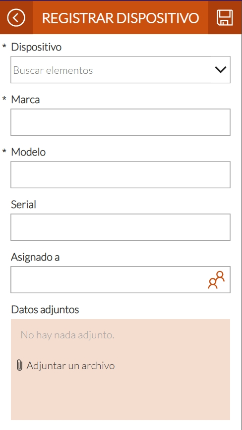
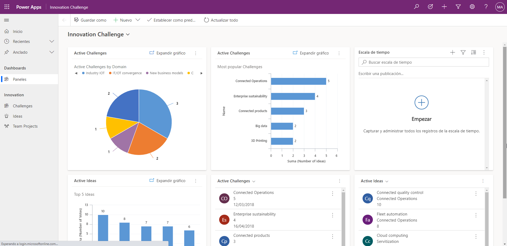

Usos principales
- Automatización de procesos
- Gestión de datos
- Creación de formularios
Es una plataforma de desarrollo low-code (bajo código) de Microsoft que permite crear aplicaciones empresariales personalizadas rápidamente, sin necesidad de saber programar.

